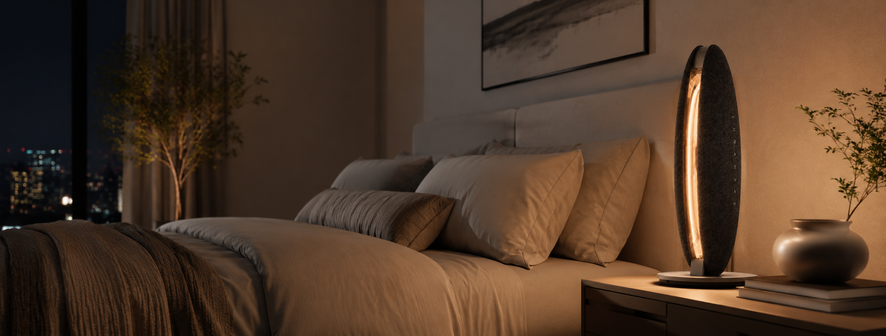
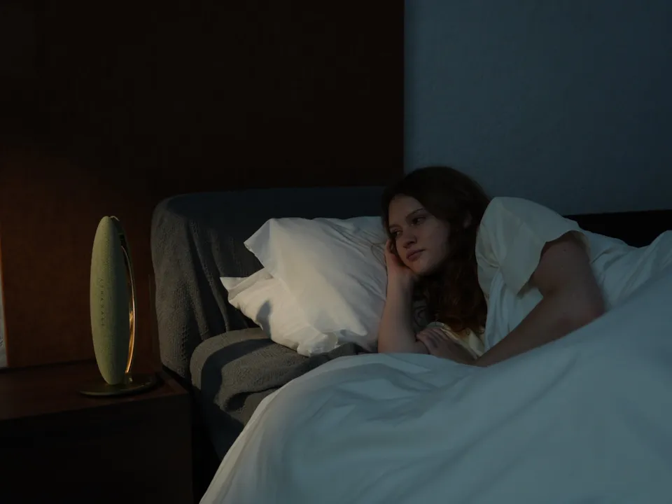
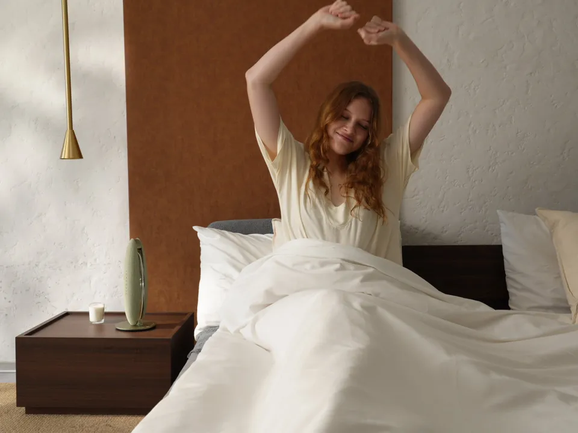
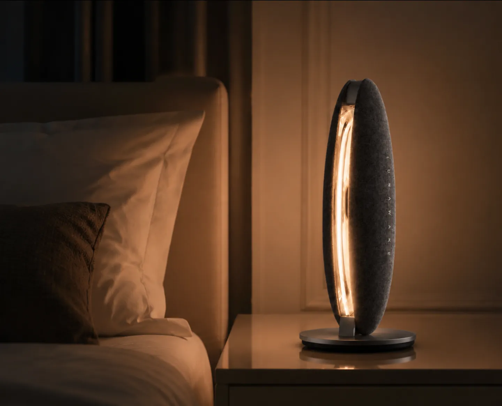
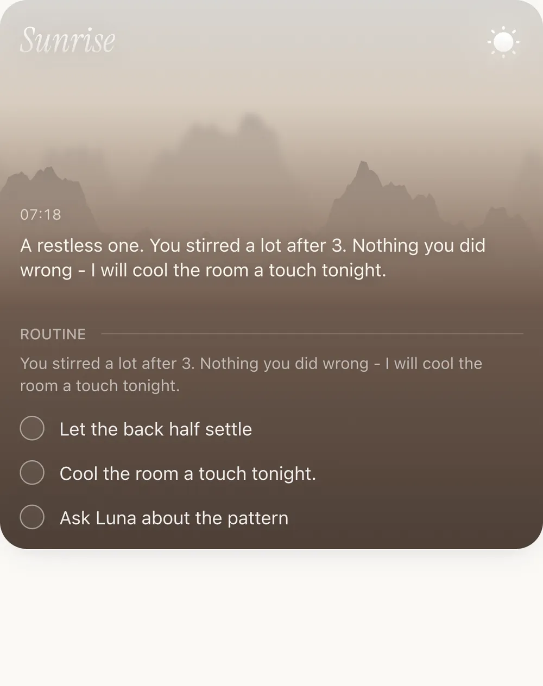
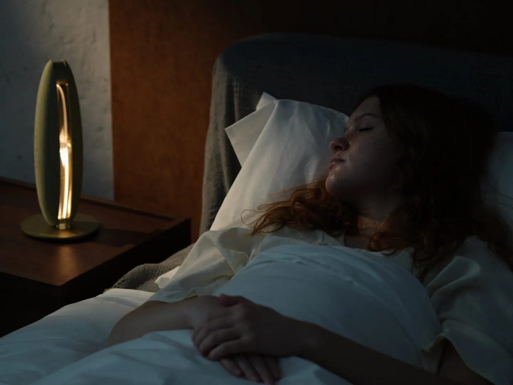

Sunrise alarm
Light that rises with the morning, inside the window you choose.

LunaWake / bedside sleep system
LunaWake senses your sleep without anything on your body — and adjusts light, sound, and the room around you while you're still asleep. In the morning: one clear read, and one thing to try tonight.
First 500 get founding pricing.
One object / four roles
LunaWake replaces the bedside stack — and unlike a schedule, it adjusts to the night you're actually having.
Light that rises with the morning, inside the window you choose.
Gentle sound for wind down, sleep, and a softer wake.
A night read without a ring to charge, wear, or remember.
Room routines that respond to the night instead of running on autopilot.
LunaWake replaces all four. No ring. No subscription required for the routines that run your night.
A six-week approach / kept quietly
CBT-I — cognitive behavioral therapy for insomnia — is a structured approach clinicians often use before medication. It works through consistency: tracking the night, adjusting the timing, and holding small changes over weeks.
Most people stop because it means keeping a sleep diary every morning for six weeks.
LunaWake keeps the diary. You just live the night.
Our approach is informed by published CBT-I outcomes across 20 clinical studies. LunaWake is a wellness product, not a medical device, and does not diagnose or treat any condition.Meet LunaWake
Wind down without another screen. Sleep without wearing another device. Wake inside the window you choose — with one clear, human read in the morning.
Get early access and launch pricingOne night / one quiet loop
Set LunaWake at the bedside, let it follow the night without contact, then wake inside the window you choose.


The device
Warm light, gentle sound, contact-free sensing, and a physical privacy gate — designed to belong at the bedside and disappear into the night.
Explore finishes
No ring. No watch. No skin contact.
A physical switch cuts off acoustic sensing at the hardware level.
Core routines keep running on-device, even when the app or network is unavailable.
Wind down gently. Wake inside the window you choose.

The object in the room
The form keeps the light, sensing, and privacy controls in one calm bedside object — close enough to help, considered enough to disappear.
Room intelligence / privacy by design
LunaWake keeps the important work close to the room. See how privacy and room intelligence work in the room itself.
Connected devices
Breathing, movement, and room conditions stay legible without turning the night into a medical dashboard.
Contact-free · Privacy switch · Local sensingQuiet signals become context, so the room can respond without becoming another thing to manage.
Wind Down and Wake can carry into the devices you already use, so the bedroom supports the routine without asking you to manage every detail.
Matter · Connected devicesOne intention can move through light, temperature, and privacy — each device keeping its own role.
Values and connected devices shown here are illustrative. Availability depends on the final Matter setup.
Product mechanism · one quiet loop
While you sleep, LunaWake notices the room locally, turns detail into a lighter state view, and gradually shapes the room around the wake window you choose.
Breathing and movement are sampled at the bedside without a wearable. Raw waveforms stay on the device.
On-device processing turns local detail into a lighter state view. Only derived features and states sync to the cloud.
Light and sound build gradually inside the wake window, while staying within the latest time you set.
Detailed sensing is processed on the device, close to the room where it happens.
The cloud receives features and states at 1 Hz, not the original waveform.
Light and sound build gradually inside the wake window you choose.
Data boundary Local sensing runs at 10 Hz; cloud sync carries derived features and states at 1 Hz. Raw waveforms stay on the device.
Illustrative product flow, not a clinical waveform.
See our approachThe Luna App
While you sleep, Luna notices quiet patterns. In the morning, it gives you one clear read and one gentle thing to try next.
See where the night felt unsettled, then choose one small adjustment for tonight.
One clear read. One useful next step.

After a few nights, Luna turns repetition into something human: not a score, but a pattern you can recognize.
A rhythm you can learn to notice.Behind the read
The quiet work stays in the background. You set the intention. Luna carries it into the room, notices the night, and returns with one clear read.
See your night differently.
Join the launch listA different kind of sleep read
Most sleep devices hand you a score and leave. Some people start sleeping worse because of it — chasing the number instead of the rest.
Luna doesn't grade your night. It tells you what happened, what it might mean, and one gentle thing to try. Then it goes quiet.
No score. No streak. Nothing to fail.Choose your finish
Three material directions, one LunaWake experience. Select a finish to see the product render in its material state.
AmberWarm textile, warm light.


Real-room study / overnight routine previewSleep Lab
We test LunaWake in real rooms and real routines. Here is what we know today, and where we are still learning.
What we're still refining: how much of that is worth showing you at all.
We're testing how early the window can open before “gentle” starts costing you sleep.
We're still learning where useful ends and overclaiming begins.
Our approach is informed by published CBT-I outcomes across 20 clinical studies. LunaWake is a consumer wellness product, not a medical device.
Questions, answered
Clarity matters. Here is what LunaWake is designed to do — and where we are still learning.
No. LunaWake is a bedside system, with no ring, watch, or sensor on your body.
No. LunaWake is designed without a camera. Its microphones are used only for passive acoustic sensing, not voice commands, text-to-speech, or conversation. The physical privacy switch cuts off acoustic sensing at the hardware level.
LunaWake notices contact-free signals such as presence, movement, and breathing patterns. Your original breathing and body data stays on the device; the app receives a morning summary for review. It is not a medical diagnostic system.
Yes. Wind down, overnight sensing, and wake routines continue locally when Wi-Fi or the app is unavailable. Wi-Fi is needed for reports, updates, backups, and home integrations.
No. LunaWake is a consumer wellness product. It does not diagnose, treat, or prevent any condition. Clinical validation is in progress.
It's a sensing device, a light, a speaker, and an on-device processor in one object — built to run your whole night locally, without a wearable and without a camera. Most people considering LunaWake are otherwise looking at a bedside light and a tracker they'd have to wear. We've priced it as one purchase, not two.
Payment plans are available at checkout, including PayPal Pay in 3 and Klarna, so LunaWake can be spread over three months at no extra cost. We're also setting up an accessibility program — join the launch list and we'll email details.
Join the launch list for product updates, testing opportunities, and availability news.